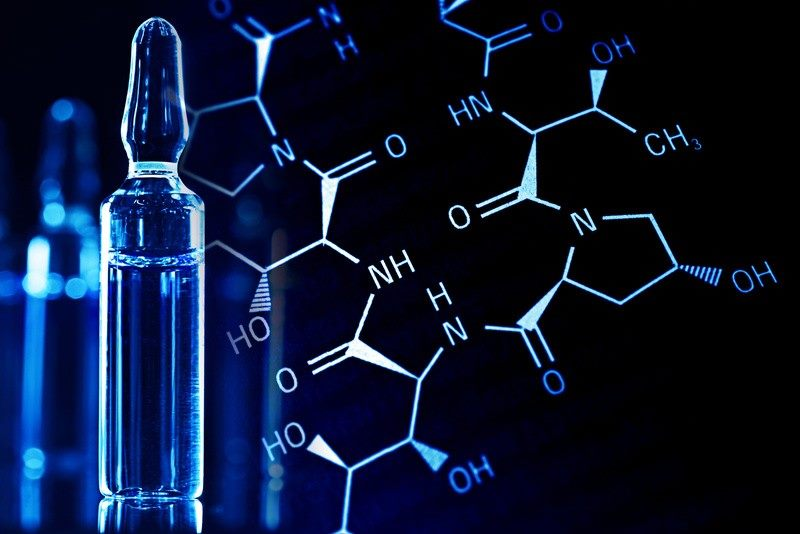

PhET simulace
Virtuálnílaboratoř
Objevte, jak funguje chemie a fyzika, pomocí interaktivních simulací a vlastních pokusů.

Chemie v praxi s PhET
Experimentujte bez laboratoře!

Interaktivní chemie
Objevování přírodních zákonů pomocí PhET simulací.
Digitální experiment
Testování hypotéz v interaktivním virtuálním prostředí.
Analýza dat
Interpretace výsledků a práce přímo v aplikaci.
Chemické a fyzikální simulace
Co se žáci naučí
- Zkoumání vlastností materiálů pomocí simulací
- Porozumění fyzikálním vlastnostem materiálů v praxi
- Propojení chemie, fyziky a digitálních dovedností
Varianta pro SŠ: digitální měření, tvorba hypotéz a vědecká metodologie.
- Vzdělávací okruh
- Chemické a fyzikální simulace
- Cíl
- Objevování fyzikálních a chemických jevů prostřednictvím simulací.
- Očekávaný výstup
- Žák realizuje experiment a dokáže interpretovat jeho výsledky.
- Rozvíjené kompetence
- Analytické myšlení, práce s daty, vyhodnocování výsledků, badatelské dovednosti.
- Cílová skupina
- 7.–9. ročník ZŠ
Metodika a pracovní listy k této aktivitě
Podrobný průběh výuky, pracovní listy a materiály ke stažení najdete v e-learningu pro učitele.